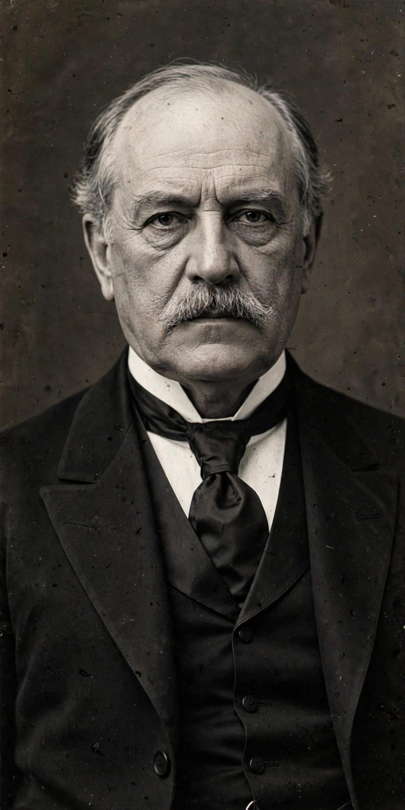

John Pierpont Morgan (April 17, 1837 – March 31, 1913) was an American financier and investment banker who dominated corporate finance on Wall Street throughout the Gilded Age and Progressive Era. As the head of the banking firm that ultimately became known as J.P. Morgan and Co., he was a driving force behind the wave of industrial consolidations in the United States in the late 19th and early 20th centuries.

Morgan began in his father Junius Spencer Morgan's banking network, and built firms that financed railroads, reorganising troubled lines in a process called 'Morganization'. In 1901 he merged Carnegie Steel with other firms to create United States Steel, the first billion-dollar corporation. He also helped form General Electric and International Harvester.
During the Panic of 1907, Morgan personally organised a coalition of bankers that provided liquidity and stopped the crisis — an episode that highlighted the absence of a central bank and helped spur creation of the Federal Reserve in 1913.
Morgan was a major art and book collector; his collection forms the core of the Morgan Library & Museum in New York. His firm evolved into parts of modern JPMorgan Chase, led in the 21st century by Jamie Dimon, and Merrill Lynch was a later Wall Street rival.